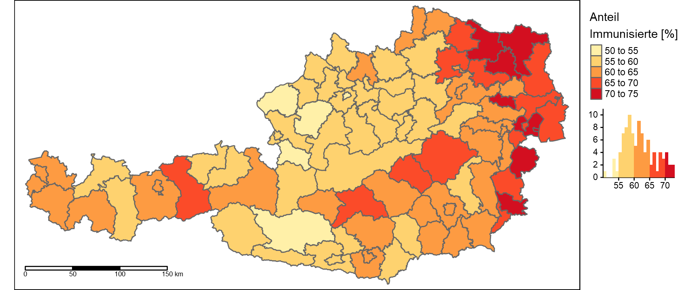
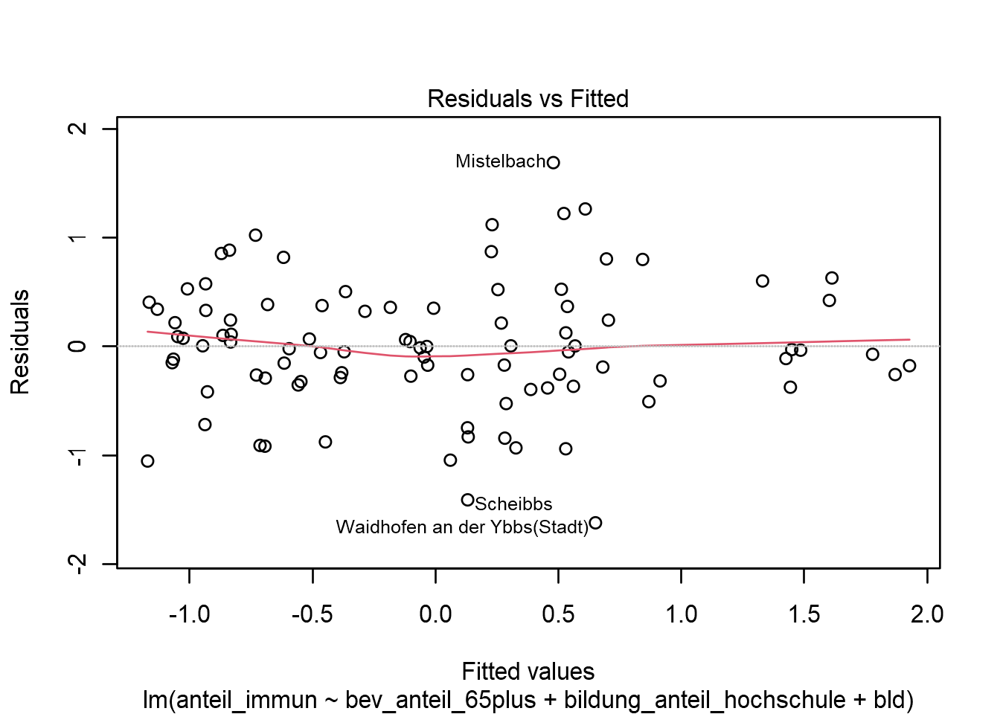
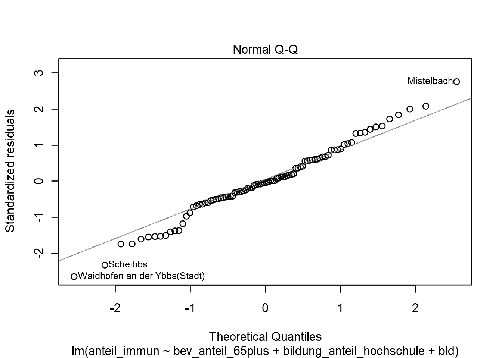
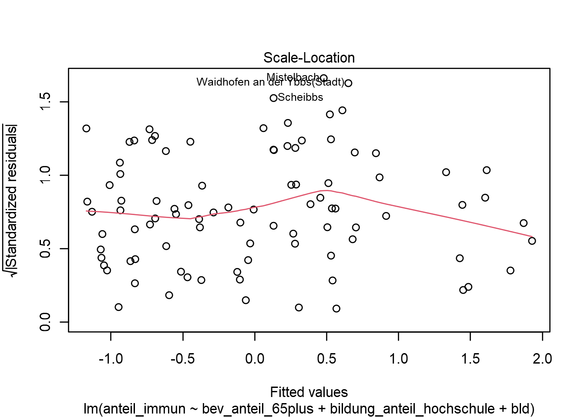
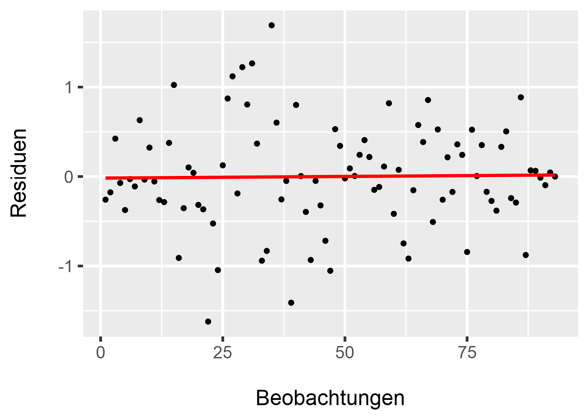

<!DOCTYPE html>
<html lang="" xml:lang="">
<head>

  <meta charset="utf-8" />
  <meta http-equiv="X-UA-Compatible" content="IE=edge" />
  <title>6 Multiple Regression II: Qualitative Variablen einbinden | How 2 do Things with even more Numbers</title>
  <meta name="description" content="6 Multiple Regression II: Qualitative Variablen einbinden | How 2 do Things with even more Numbers" />
  <meta name="generator" content="bookdown 0.24 and GitBook 2.6.7" />

  <meta property="og:title" content="6 Multiple Regression II: Qualitative Variablen einbinden | How 2 do Things with even more Numbers" />
  <meta property="og:type" content="book" />
  
  
  
  

  <meta name="twitter:card" content="summary" />
  <meta name="twitter:title" content="6 Multiple Regression II: Qualitative Variablen einbinden | How 2 do Things with even more Numbers" />
  
  
  

<meta name="author" content="Kami Höferl | https://orcid.org/0000-0002-5397-180X" />


  <meta name="viewport" content="width=device-width, initial-scale=1" />
  <meta name="apple-mobile-web-app-capable" content="yes" />
  <meta name="apple-mobile-web-app-status-bar-style" content="black" />
  
  
<link rel="prev" href="05_multireg_I.html"/>
<link rel="next" href="07_cluster_I.html"/>
<script src="libs/header-attrs-2.12/header-attrs.js"></script>
<script src="libs/jquery-3.6.0/jquery-3.6.0.min.js"></script>
<script src="https://cdn.jsdelivr.net/npm/fuse.js@6.4.6/dist/fuse.min.js"></script>
<link href="libs/gitbook-2.6.7/css/style.css" rel="stylesheet" />
<link href="libs/gitbook-2.6.7/css/plugin-table.css" rel="stylesheet" />
<link href="libs/gitbook-2.6.7/css/plugin-bookdown.css" rel="stylesheet" />
<link href="libs/gitbook-2.6.7/css/plugin-highlight.css" rel="stylesheet" />
<link href="libs/gitbook-2.6.7/css/plugin-search.css" rel="stylesheet" />
<link href="libs/gitbook-2.6.7/css/plugin-fontsettings.css" rel="stylesheet" />
<link href="libs/gitbook-2.6.7/css/plugin-clipboard.css" rel="stylesheet" />


<link href="libs/anchor-sections-1.1.0/anchor-sections.css" rel="stylesheet" />
<link href="libs/anchor-sections-1.1.0/anchor-sections-hash.css" rel="stylesheet" />
<script src="libs/anchor-sections-1.1.0/anchor-sections.js"></script>
<html>

  <head>
  <script>
    window.addEventListener("load", () => {
        const enabled = document.querySelectorAll(".fullscreen-enabled");
        for (let i = 0; i < enabled.length; i++) {
            enabled[i].style.cursor = "pointer";
            enabled[i].onclick = () => {
                enabled[i].requestFullscreen();
            };
        }
    });
  </script>
  </head>

  <body>
  <!-- body content here -->
  </body>

</html>


<style type="text/css">
pre > code.sourceCode { white-space: pre; position: relative; }
pre > code.sourceCode > span { display: inline-block; line-height: 1.25; }
pre > code.sourceCode > span:empty { height: 1.2em; }
.sourceCode { overflow: visible; }
code.sourceCode > span { color: inherit; text-decoration: inherit; }
pre.sourceCode { margin: 0; }
@media screen {
div.sourceCode { overflow: auto; }
}
@media print {
pre > code.sourceCode { white-space: pre-wrap; }
pre > code.sourceCode > span { text-indent: -5em; padding-left: 5em; }
}
pre.numberSource code
  { counter-reset: source-line 0; }
pre.numberSource code > span
  { position: relative; left: -4em; counter-increment: source-line; }
pre.numberSource code > span > a:first-child::before
  { content: counter(source-line);
    position: relative; left: -1em; text-align: right; vertical-align: baseline;
    border: none; display: inline-block;
    -webkit-touch-callout: none; -webkit-user-select: none;
    -khtml-user-select: none; -moz-user-select: none;
    -ms-user-select: none; user-select: none;
    padding: 0 4px; width: 4em;
    color: #aaaaaa;
  }
pre.numberSource { margin-left: 3em; border-left: 1px solid #aaaaaa;  padding-left: 4px; }
div.sourceCode
  {   }
@media screen {
pre > code.sourceCode > span > a:first-child::before { text-decoration: underline; }
}
code span.al { color: #ff0000; } /* Alert */
code span.an { color: #008000; } /* Annotation */
code span.at { } /* Attribute */
code span.bu { } /* BuiltIn */
code span.cf { color: #0000ff; } /* ControlFlow */
code span.ch { color: #008080; } /* Char */
code span.cn { } /* Constant */
code span.co { color: #008000; } /* Comment */
code span.cv { color: #008000; } /* CommentVar */
code span.do { color: #008000; } /* Documentation */
code span.er { color: #ff0000; font-weight: bold; } /* Error */
code span.ex { } /* Extension */
code span.im { } /* Import */
code span.in { color: #008000; } /* Information */
code span.kw { color: #0000ff; } /* Keyword */
code span.op { } /* Operator */
code span.ot { color: #ff4000; } /* Other */
code span.pp { color: #ff4000; } /* Preprocessor */
code span.sc { color: #008080; } /* SpecialChar */
code span.ss { color: #008080; } /* SpecialString */
code span.st { color: #008080; } /* String */
code span.va { } /* Variable */
code span.vs { color: #008080; } /* VerbatimString */
code span.wa { color: #008000; font-weight: bold; } /* Warning */
</style>

<style type="text/css">
/* Used with Pandoc 2.11+ new --citeproc when CSL is used */
div.csl-bib-body { }
div.csl-entry {
  clear: both;
}
.hanging div.csl-entry {
  margin-left:2em;
  text-indent:-2em;
}
div.csl-left-margin {
  min-width:2em;
  float:left;
}
div.csl-right-inline {
  margin-left:2em;
  padding-left:1em;
}
div.csl-indent {
  margin-left: 2em;
}
</style>

<link rel="stylesheet" href="style.css" type="text/css" />
</head>

<body>


  <div class="book without-animation with-summary font-size-2 font-family-1" data-basepath=".">

    <div class="book-summary">
      <nav role="navigation">

<ul class="summary">
<li><a href="index.html#howdy">Howdy*<span></span></a></li>
<li class="chapter" data-level="1" data-path="01_syllabus.html"><a href="01_syllabus.html"><i class="fa fa-check"></i><b>1</b> Ouvertüre (aka “Syllabus”)<span></span></a>
<ul>
<li class="chapter" data-level="1.1" data-path="01_syllabus.html"><a href="01_syllabus.html#lernziele"><i class="fa fa-check"></i><b>1.1</b> Lernziele<span></span></a></li>
<li class="chapter" data-level="1.2" data-path="01_syllabus.html"><a href="01_syllabus.html#zeitplanung"><i class="fa fa-check"></i><b>1.2</b> Zeitplanung<span></span></a></li>
<li class="chapter" data-level="1.3" data-path="01_syllabus.html"><a href="01_syllabus.html#rulez-of-the-game"><i class="fa fa-check"></i><b>1.3</b> Rulez of the Game<span></span></a></li>
<li class="chapter" data-level="1.4" data-path="01_syllabus.html"><a href="01_syllabus.html#bewertungskriterien"><i class="fa fa-check"></i><b>1.4</b> Bewertungskriterien<span></span></a></li>
<li class="chapter" data-level="1.5" data-path="01_syllabus.html"><a href="01_syllabus.html#formelles-zu-den-übungsarbeiten-homes"><i class="fa fa-check"></i><b>1.5</b> Formelles zu den Übungsarbeiten (@Homes)<span></span></a></li>
<li class="chapter" data-level="1.6" data-path="01_syllabus.html"><a href="01_syllabus.html#empfehlung-zur-eingesetzten-software"><i class="fa fa-check"></i><b>1.6</b> Empfehlung zur eingesetzten Software<span></span></a></li>
<li class="chapter" data-level="1.7" data-path="01_syllabus.html"><a href="01_syllabus.html#ausgewählte-hilfestellungen-zum-thema-r-und-rstudio"><i class="fa fa-check"></i><b>1.7</b> Ausgewählte Hilfestellungen zum Thema R und RStudio<span></span></a></li>
<li class="chapter" data-level="1.8" data-path="01_syllabus.html"><a href="01_syllabus.html#literatur-zur-lehrveranstaltung"><i class="fa fa-check"></i><b>1.8</b> Literatur zur Lehrveranstaltung<span></span></a></li>
</ul></li>
<li class="chapter" data-level="2" data-path="02_why.html"><a href="02_why.html"><i class="fa fa-check"></i><b>2</b> Wozu noch mehr Verfahren?<span></span></a>
<ul>
<li><a href="02_why.html#zielsetzung-dieser-einheit">📢 Zielsetzung dieser Einheit<span></span></a></li>
<li class="chapter" data-level="2.1" data-path="02_why.html"><a href="02_why.html#recap-zur-rolle-der-methoden-in-der-empirischen-forschung"><i class="fa fa-check"></i><b>2.1</b> Recap: Zur Rolle der Methoden in der empirischen Forschung<span></span></a></li>
<li class="chapter" data-level="2.2" data-path="02_why.html"><a href="02_why.html#multivariate-verfahren---ein-kurzer-überblick"><i class="fa fa-check"></i><b>2.2</b> Multivariate Verfahren - ein kurzer Überblick<span></span></a></li>
<li class="chapter" data-level="2.3" data-path="02_why.html"><a href="02_why.html#quantitative-inhaltsanalyse---ein-erster-einblick"><i class="fa fa-check"></i><b>2.3</b> Quantitative Inhaltsanalyse - ein erster Einblick<span></span></a></li>
</ul></li>
<li class="chapter" data-level="3" data-path="03_warmup_1.html"><a href="03_warmup_1.html"><i class="fa fa-check"></i><b>3</b> Warmup 1: Messen und Skalen<span></span></a>
<ul>
<li><a href="03_warmup_1.html#zielsetzung-dieser-einheit-1">📢 Zielsetzung dieser Einheit<span></span></a></li>
<li class="chapter" data-level="3.1" data-path="03_warmup_1.html"><a href="03_warmup_1.html#was-passiert-beim-messen"><i class="fa fa-check"></i><b>3.1</b> Was passiert beim Messen?<span></span></a></li>
<li class="chapter" data-level="3.2" data-path="03_warmup_1.html"><a href="03_warmup_1.html#skalenniveaus-reloaded"><i class="fa fa-check"></i><b>3.2</b> Skalenniveaus (reloaded)<span></span></a></li>
</ul></li>
<li class="chapter" data-level="4" data-path="04_warmup_2.html"><a href="04_warmup_2.html"><i class="fa fa-check"></i><b>4</b> Warmup 2: Wissenschaftliche Datenanalyse<span></span></a>
<ul>
<li><a href="04_warmup_2.html#zielsetzung-dieser-einheit-2">📢 Zielsetzung dieser Einheit<span></span></a></li>
<li class="chapter" data-level="4.1" data-path="04_warmup_2.html"><a href="04_warmup_2.html#daten-analysieren---aber-wie"><i class="fa fa-check"></i><b>4.1</b> Daten analysieren - aber wie?<span></span></a></li>
<li class="chapter" data-level="4.2" data-path="04_warmup_2.html"><a href="04_warmup_2.html#anforderungen-an-eine-wissenschaftliche-datenanalyse"><i class="fa fa-check"></i><b>4.2</b> Anforderungen an eine wissenschaftliche Datenanalyse<span></span></a></li>
<li class="chapter" data-level="4.3" data-path="04_warmup_2.html"><a href="04_warmup_2.html#daten-finden-und-validieren"><i class="fa fa-check"></i><b>4.3</b> Daten finden und validieren<span></span></a></li>
</ul></li>
<li class="chapter" data-level="5" data-path="05_multireg_I.html"><a href="05_multireg_I.html"><i class="fa fa-check"></i><b>5</b> Multiple Regression I: Grundlagen linearer Modelle<span></span></a>
<ul>
<li><a href="05_multireg_I.html#zielsetzung-dieser-einheit-3">📢 Zielsetzung dieser Einheit<span></span></a></li>
<li class="chapter" data-level="5.1" data-path="05_multireg_I.html"><a href="05_multireg_I.html#ouvert-reg1"><i class="fa fa-check"></i><b>5.1</b> Ouvertüre<span></span></a></li>
<li class="chapter" data-level="5.2" data-path="05_multireg_I.html"><a href="05_multireg_I.html#dataimport-reg1"><i class="fa fa-check"></i><b>5.2</b> Daten importieren<span></span></a></li>
<li class="chapter" data-level="5.3" data-path="05_multireg_I.html"><a href="05_multireg_I.html#daten-validieren"><i class="fa fa-check"></i><b>5.3</b> Daten validieren<span></span></a>
<ul>
<li class="chapter" data-level="5.3.1" data-path="05_multireg_I.html"><a href="05_multireg_I.html#map-impfquoten"><i class="fa fa-check"></i><b>5.3.1</b> Ein Exkurs: Die räumliche Variabilität der Impfquoten<span></span></a></li>
</ul></li>
<li class="chapter" data-level="5.4" data-path="05_multireg_I.html"><a href="05_multireg_I.html#die-mathematischen-grundlagen-linearer-modelle"><i class="fa fa-check"></i><b>5.4</b> Die mathematischen Grundlagen linearer Modelle<span></span></a></li>
<li class="chapter" data-level="5.5" data-path="05_multireg_I.html"><a href="05_multireg_I.html#die-gedankliche-modellbildung"><i class="fa fa-check"></i><b>5.5</b> Die gedankliche Modellbildung<span></span></a></li>
<li class="chapter" data-level="5.6" data-path="05_multireg_I.html"><a href="05_multireg_I.html#ein-blick-auf-die-gewählten-variablen"><i class="fa fa-check"></i><b>5.6</b> Ein Blick auf die gewählten Variablen<span></span></a>
<ul>
<li class="chapter" data-level="5.6.1" data-path="05_multireg_I.html"><a href="05_multireg_I.html#ztrans"><i class="fa fa-check"></i><b>5.6.1</b> Standardisierung von Variablen<span></span></a></li>
<li class="chapter" data-level="5.6.2" data-path="05_multireg_I.html"><a href="05_multireg_I.html#korrel-reg1"><i class="fa fa-check"></i><b>5.6.2</b> Beziehungen der Variablen zueinander<span></span></a></li>
</ul></li>
<li class="chapter" data-level="5.7" data-path="05_multireg_I.html"><a href="05_multireg_I.html#die-modellbildung"><i class="fa fa-check"></i><b>5.7</b> Die Modellbildung<span></span></a>
<ul>
<li class="chapter" data-level="5.7.1" data-path="05_multireg_I.html"><a href="05_multireg_I.html#referenzmodell"><i class="fa fa-check"></i><b>5.7.1</b> Ein alternatives Modell<span></span></a></li>
</ul></li>
<li class="chapter" data-level="5.8" data-path="05_multireg_I.html"><a href="05_multireg_I.html#annahmen"><i class="fa fa-check"></i><b>5.8</b> Überprüfung der Modellannahmen<span></span></a>
<ul>
<li class="chapter" data-level="5.8.1" data-path="05_multireg_I.html"><a href="05_multireg_I.html#prüfung-des-linearen-zusammenhangs"><i class="fa fa-check"></i><b>5.8.1</b> Prüfung des linearen Zusammenhangs<span></span></a></li>
<li class="chapter" data-level="5.8.2" data-path="05_multireg_I.html"><a href="05_multireg_I.html#prüfung-der-unabhängigkeit-der-erklärenden-variablen-multikollinearität"><i class="fa fa-check"></i><b>5.8.2</b> Prüfung der Unabhängigkeit der erklärenden Variablen (“Multikollinearität”)<span></span></a></li>
<li class="chapter" data-level="5.8.3" data-path="05_multireg_I.html"><a href="05_multireg_I.html#prüfung-der-normalverteilung-der-residuen"><i class="fa fa-check"></i><b>5.8.3</b> Prüfung der Normalverteilung der Residuen<span></span></a></li>
<li class="chapter" data-level="5.8.4" data-path="05_multireg_I.html"><a href="05_multireg_I.html#prüfung-der-konstanz-der-varianz-der-residuen-homoskedastizität"><i class="fa fa-check"></i><b>5.8.4</b> Prüfung der Konstanz der Varianz der Residuen (“Homoskedastizität”)<span></span></a></li>
<li class="chapter" data-level="5.8.5" data-path="05_multireg_I.html"><a href="05_multireg_I.html#prüfung-auf-autokorrelation"><i class="fa fa-check"></i><b>5.8.5</b> Prüfung auf Autokorrelation<span></span></a></li>
</ul></li>
</ul></li>
<li class="chapter" data-level="6" data-path="06_multireg_II.html"><a href="06_multireg_II.html"><i class="fa fa-check"></i><b>6</b> Multiple Regression II: Qualitative Variablen einbinden<span></span></a>
<ul>
<li><a href="06_multireg_II.html#zielsetzung-dieser-einheit-4">📢 Zielsetzung dieser Einheit<span></span></a></li>
<li class="chapter" data-level="6.1" data-path="06_multireg_II.html"><a href="06_multireg_II.html#ouvertüre"><i class="fa fa-check"></i><b>6.1</b> Ouvertüre<span></span></a></li>
<li class="chapter" data-level="6.2" data-path="06_multireg_II.html"><a href="06_multireg_II.html#gedankliche-modellbildung"><i class="fa fa-check"></i><b>6.2</b> Gedankliche Modellbildung<span></span></a></li>
<li class="chapter" data-level="6.3" data-path="06_multireg_II.html"><a href="06_multireg_II.html#daten-importieren"><i class="fa fa-check"></i><b>6.3</b> Daten importieren<span></span></a></li>
<li class="chapter" data-level="6.4" data-path="06_multireg_II.html"><a href="06_multireg_II.html#die-bundeslandzugehörigkeit-der-bezirke-ermitteln"><i class="fa fa-check"></i><b>6.4</b> Die Bundeslandzugehörigkeit der Bezirke ermitteln<span></span></a></li>
<li class="chapter" data-level="6.5" data-path="06_multireg_II.html"><a href="06_multireg_II.html#qualVaria"><i class="fa fa-check"></i><b>6.5</b> Qualitative Variablen in Regressionsmodellen nutzen<span></span></a></li>
<li class="chapter" data-level="6.6" data-path="06_multireg_II.html"><a href="06_multireg_II.html#der-einfluß-des-bundeslandes-auf-die-impfquote"><i class="fa fa-check"></i><b>6.6</b> Der Einfluß des Bundeslandes auf die Impfquote<span></span></a>
<ul>
<li class="chapter" data-level="6.6.1" data-path="06_multireg_II.html"><a href="06_multireg_II.html#standardisieren-der-metrischen-variablen"><i class="fa fa-check"></i><b>6.6.1</b> Standardisieren der metrischen Variablen<span></span></a></li>
<li class="chapter" data-level="6.6.2" data-path="06_multireg_II.html"><a href="06_multireg_II.html#reproduktion-unseres-referenzmodells-aus-einheit-refreg1"><i class="fa fa-check"></i><b>6.6.2</b> Reproduktion unseres Referenzmodells aus Einheit @ref(reg1)<span></span></a></li>
<li class="chapter" data-level="6.6.3" data-path="06_multireg_II.html"><a href="06_multireg_II.html#erweiterung-des-modells-um-die-bundeslandzugehörigkeit-der-bezirke"><i class="fa fa-check"></i><b>6.6.3</b> Erweiterung des Modells um die Bundeslandzugehörigkeit der Bezirke<span></span></a></li>
<li class="chapter" data-level="6.6.4" data-path="06_multireg_II.html"><a href="06_multireg_II.html#modelloptimierung"><i class="fa fa-check"></i><b>6.6.4</b> Modelloptimierung<span></span></a></li>
</ul></li>
<li class="chapter" data-level="6.7" data-path="06_multireg_II.html"><a href="06_multireg_II.html#abschließendes-prüfen-der-modellannahmen"><i class="fa fa-check"></i><b>6.7</b> Abschließendes Prüfen der Modellannahmen<span></span></a>
<ul>
<li class="chapter" data-level="6.7.1" data-path="06_multireg_II.html"><a href="06_multireg_II.html#prüfung-des-linearen-zusammenhangs-1"><i class="fa fa-check"></i><b>6.7.1</b> Prüfung des linearen Zusammenhangs<span></span></a></li>
<li class="chapter" data-level="6.7.2" data-path="06_multireg_II.html"><a href="06_multireg_II.html#prüfung-der-normalverteilung-der-residuen-1"><i class="fa fa-check"></i><b>6.7.2</b> Prüfung der Normalverteilung der Residuen<span></span></a></li>
<li class="chapter" data-level="6.7.3" data-path="06_multireg_II.html"><a href="06_multireg_II.html#prüfung-des-erwartungswerts-der-residuen"><i class="fa fa-check"></i><b>6.7.3</b> Prüfung des Erwartungswerts der Residuen<span></span></a></li>
<li class="chapter" data-level="6.7.4" data-path="06_multireg_II.html"><a href="06_multireg_II.html#prüfung-der-konstanz-der-varianz-der-residuen-homoskedastizität-1"><i class="fa fa-check"></i><b>6.7.4</b> Prüfung der Konstanz der Varianz der Residuen (“Homoskedastizität”)<span></span></a></li>
<li class="chapter" data-level="6.7.5" data-path="06_multireg_II.html"><a href="06_multireg_II.html#prüfung-auf-autokorrelation-1"><i class="fa fa-check"></i><b>6.7.5</b> Prüfung auf Autokorrelation<span></span></a></li>
</ul></li>
</ul></li>
<li class="chapter" data-level="7" data-path="07_cluster_I.html"><a href="07_cluster_I.html"><i class="fa fa-check"></i><b>7</b> Clusteranalyse I: Grundlagen<span></span></a>
<ul>
<li><a href="07_cluster_I.html#zielsetzung-dieser-einheit-5">📢 Zielsetzung dieser Einheit<span></span></a></li>
<li class="chapter" data-level="7.1" data-path="07_cluster_I.html"><a href="07_cluster_I.html#was-passiert-bei-einer-clusteranalyse"><i class="fa fa-check"></i><b>7.1</b> Was passiert bei einer Clusteranalyse?<span></span></a></li>
<li class="chapter" data-level="7.2" data-path="07_cluster_I.html"><a href="07_cluster_I.html#ein-beispiel"><i class="fa fa-check"></i><b>7.2</b> Ein Beispiel<span></span></a>
<ul>
<li class="chapter" data-level="7.2.1" data-path="07_cluster_I.html"><a href="07_cluster_I.html#ein-versuch-zur-klassifikation-der-corona-lage-in-österreich-bezirken"><i class="fa fa-check"></i><b>7.2.1</b> Ein Versuch zur Klassifikation der “Corona-Lage” in Österreich Bezirken<span></span></a></li>
</ul></li>
<li class="chapter" data-level="7.3" data-path="07_cluster_I.html"><a href="07_cluster_I.html#vorueberlegungen-cluster"><i class="fa fa-check"></i><b>7.3</b> Einige Vorüberlegungen<span></span></a>
<ul>
<li class="chapter" data-level="7.3.1" data-path="07_cluster_I.html"><a href="07_cluster_I.html#identifikation-der-zur-klassifikation-verwendeten-variablen"><i class="fa fa-check"></i><b>7.3.1</b> Identifikation der zur Klassifikation verwendeten Variablen<span></span></a></li>
<li class="chapter" data-level="7.3.2" data-path="07_cluster_I.html"><a href="07_cluster_I.html#überprüfen-der-gleichgewichtung-der-variablen"><i class="fa fa-check"></i><b>7.3.2</b> Überprüfen der Gleichgewichtung der Variablen<span></span></a></li>
<li class="chapter" data-level="7.3.3" data-path="07_cluster_I.html"><a href="07_cluster_I.html#ein-blick-auf-die-varianz-der-ausgewählten-variablen"><i class="fa fa-check"></i><b>7.3.3</b> Ein Blick auf die Varianz der ausgewählten Variablen<span></span></a></li>
<li class="chapter" data-level="7.3.4" data-path="07_cluster_I.html"><a href="07_cluster_I.html#die-identifikation-clusteranalytischer-ausreißer"><i class="fa fa-check"></i><b>7.3.4</b> Die Identifikation clusteranalytischer Ausreißer<span></span></a></li>
</ul></li>
<li class="chapter" data-level="7.4" data-path="07_cluster_I.html"><a href="07_cluster_I.html#die-clusterung-der-bezirke"><i class="fa fa-check"></i><b>7.4</b> Die Clusterung der Bezirke<span></span></a>
<ul>
<li class="chapter" data-level="7.4.1" data-path="07_cluster_I.html"><a href="07_cluster_I.html#die-anzahl-der-cluster-bestimmen"><i class="fa fa-check"></i><b>7.4.1</b> Die Anzahl der Cluster bestimmen<span></span></a></li>
</ul></li>
<li class="chapter" data-level="7.5" data-path="07_cluster_I.html"><a href="07_cluster_I.html#inhaltliche-beschreibung-der-cluster"><i class="fa fa-check"></i><b>7.5</b> Inhaltliche Beschreibung der Cluster<span></span></a></li>
<li class="chapter" data-level="7.6" data-path="07_cluster_I.html"><a href="07_cluster_I.html#darstellung-der-räumlichen-verteilung"><i class="fa fa-check"></i><b>7.6</b> Darstellung der räumlichen Verteilung<span></span></a></li>
</ul></li>
<li class="chapter" data-level="8" data-path="08_cluster_II_v2.html"><a href="08_cluster_II_v2.html"><i class="fa fa-check"></i><b>8</b> Clusteranalyse II: Gemischtskalige Modelle<span></span></a>
<ul>
<li><a href="08_cluster_II_v2.html#zielsetzung-dieser-einheit-6">📢 Zielsetzung dieser Einheit<span></span></a></li>
<li class="chapter" data-level="8.1" data-path="08_cluster_II_v2.html"><a href="08_cluster_II_v2.html#wie-funktioniert-gemischtskalige-clusterung"><i class="fa fa-check"></i><b>8.1</b> (Wie) Funktioniert gemischtskalige Clusterung?<span></span></a></li>
<li class="chapter" data-level="8.2" data-path="08_cluster_II_v2.html"><a href="08_cluster_II_v2.html#die-gower-distanz"><i class="fa fa-check"></i><b>8.2</b> Die Gower-Distanz<span></span></a></li>
<li class="chapter" data-level="8.3" data-path="08_cluster_II_v2.html"><a href="08_cluster_II_v2.html#ein-beispiel-überprüfung-der-hillbilly-these-zur-covid-19-schutzimpfung"><i class="fa fa-check"></i><b>8.3</b> Ein Beispiel: Überprüfung der “Hillbilly-These” zur COVID-19-Schutzimpfung<span></span></a></li>
<li class="chapter" data-level="8.4" data-path="08_cluster_II_v2.html"><a href="08_cluster_II_v2.html#vorueberlegungen-cluster-2"><i class="fa fa-check"></i><b>8.4</b> Einige Vorüberlegungen<span></span></a></li>
<li class="chapter" data-level="8.5" data-path="08_cluster_II_v2.html"><a href="08_cluster_II_v2.html#die-datenaufbereitung"><i class="fa fa-check"></i><b>8.5</b> Die Datenaufbereitung<span></span></a></li>
<li class="chapter" data-level="8.6" data-path="08_cluster_II_v2.html"><a href="08_cluster_II_v2.html#ein-blick-auf-die-gewählten-clustervariablen"><i class="fa fa-check"></i><b>8.6</b> Ein Blick auf die gewählten Clustervariablen<span></span></a></li>
<li class="chapter" data-level="8.7" data-path="08_cluster_II_v2.html"><a href="08_cluster_II_v2.html#ermittlung-der-ähnlichkeiten"><i class="fa fa-check"></i><b>8.7</b> Ermittlung der Ähnlichkeiten<span></span></a></li>
<li class="chapter" data-level="8.8" data-path="08_cluster_II_v2.html"><a href="08_cluster_II_v2.html#identifikation-von-ausreißern"><i class="fa fa-check"></i><b>8.8</b> Identifikation von Ausreißern<span></span></a></li>
<li class="chapter" data-level="8.9" data-path="08_cluster_II_v2.html"><a href="08_cluster_II_v2.html#clusterung-der-gemeinden"><i class="fa fa-check"></i><b>8.9</b> Clusterung der Gemeinden<span></span></a></li>
<li class="chapter" data-level="8.10" data-path="08_cluster_II_v2.html"><a href="08_cluster_II_v2.html#beurteilung-der-trennschärfe-der-gewählten-clusteranzahl"><i class="fa fa-check"></i><b>8.10</b> Beurteilung der Trennschärfe der gewählten Clusteranzahl<span></span></a></li>
<li class="chapter" data-level="8.11" data-path="08_cluster_II_v2.html"><a href="08_cluster_II_v2.html#charakterisierung-der-cluster"><i class="fa fa-check"></i><b>8.11</b> Charakterisierung der Cluster<span></span></a></li>
<li class="chapter" data-level="8.12" data-path="08_cluster_II_v2.html"><a href="08_cluster_II_v2.html#die-räumliche-verteilung-der-cluster"><i class="fa fa-check"></i><b>8.12</b> Die räumliche Verteilung der Cluster<span></span></a>
<ul>
<li class="chapter" data-level="8.12.1" data-path="08_cluster_II_v2.html"><a href="08_cluster_II_v2.html#die-datenbeschaffung--aufbereitung"><i class="fa fa-check"></i><b>8.12.1</b> Die Datenbeschaffung &amp; -aufbereitung<span></span></a></li>
<li class="chapter" data-level="8.12.2" data-path="08_cluster_II_v2.html"><a href="08_cluster_II_v2.html#die-attributdaten-joinen"><i class="fa fa-check"></i><b>8.12.2</b> Die Attributdaten joinen<span></span></a></li>
<li class="chapter" data-level="8.12.3" data-path="08_cluster_II_v2.html"><a href="08_cluster_II_v2.html#die-räumliche-verteilung-der-cluster-darstellen"><i class="fa fa-check"></i><b>8.12.3</b> Die räumliche Verteilung der Cluster darstellen<span></span></a></li>
</ul></li>
</ul></li>
<li class="chapter" data-level="9" data-path="80_atHome_2.html"><a href="80_atHome_2.html"><i class="fa fa-check"></i><b>9</b> @Home2: Multiple Regression<span></span></a>
<ul>
<li><a href="80_atHome_2.html#zielsetzung">📢 Zielsetzung<span></span></a></li>
<li class="chapter" data-level="9.1" data-path="80_atHome_2.html"><a href="80_atHome_2.html#ausgangslage"><i class="fa fa-check"></i><b>9.1</b> Ausgangslage<span></span></a></li>
<li class="chapter" data-level="9.2" data-path="80_atHome_2.html"><a href="80_atHome_2.html#aufgabenstellung"><i class="fa fa-check"></i><b>9.2</b> Aufgabenstellung<span></span></a></li>
<li class="chapter" data-level="9.3" data-path="80_atHome_2.html"><a href="80_atHome_2.html#formelles"><i class="fa fa-check"></i><b>9.3</b> Formelles<span></span></a></li>
<li class="chapter" data-level="9.4" data-path="80_atHome_2.html"><a href="80_atHome_2.html#empfehlung"><i class="fa fa-check"></i><b>9.4</b> Empfehlung<span></span></a></li>
</ul></li>
<li class="chapter" data-level="10" data-path="81_atHome_3.html"><a href="81_atHome_3.html"><i class="fa fa-check"></i><b>10</b> @Home3: Clusteranalyse<span></span></a>
<ul>
<li><a href="81_atHome_3.html#zielsetzung-1">📢 Zielsetzung<span></span></a></li>
<li class="chapter" data-level="10.1" data-path="81_atHome_3.html"><a href="81_atHome_3.html#ausgangslage-1"><i class="fa fa-check"></i><b>10.1</b> Ausgangslage<span></span></a></li>
<li class="chapter" data-level="10.2" data-path="81_atHome_3.html"><a href="81_atHome_3.html#datengrundlage"><i class="fa fa-check"></i><b>10.2</b> Datengrundlage<span></span></a></li>
<li class="chapter" data-level="10.3" data-path="81_atHome_3.html"><a href="81_atHome_3.html#aufgabenstellung-1"><i class="fa fa-check"></i><b>10.3</b> Aufgabenstellung<span></span></a></li>
<li class="chapter" data-level="10.4" data-path="81_atHome_3.html"><a href="81_atHome_3.html#formelles-1"><i class="fa fa-check"></i><b>10.4</b> Formelles<span></span></a></li>
<li class="chapter" data-level="10.5" data-path="81_atHome_3.html"><a href="81_atHome_3.html#empfehlung-1"><i class="fa fa-check"></i><b>10.5</b> Empfehlung<span></span></a></li>
</ul></li>
<li class="chapter" data-level="11" data-path="90_reporting.html"><a href="90_reporting.html"><i class="fa fa-check"></i><b>11</b> Addendum 1: Spreading the Word<span></span></a>
<ul>
<li><a href="90_reporting.html#zielsetzung-dieser-einheit-7">📢 Zielsetzung dieser Einheit<span></span></a></li>
<li class="chapter" data-level="11.1" data-path="90_reporting.html"><a href="90_reporting.html#prolog"><i class="fa fa-check"></i><b>11.1</b> Prolog<span></span></a></li>
<li class="chapter" data-level="11.2" data-path="90_reporting.html"><a href="90_reporting.html#keep-it-simple-compile"><i class="fa fa-check"></i><b>11.2</b> Keep it simple &amp; compile<span></span></a></li>
<li class="chapter" data-level="11.3" data-path="90_reporting.html"><a href="90_reporting.html#vom-skript-zum-markdown"><i class="fa fa-check"></i><b>11.3</b> Vom Skript zum Markdown<span></span></a></li>
<li class="chapter" data-level="11.4" data-path="90_reporting.html"><a href="90_reporting.html#ein-tipp-r-notebooks"><i class="fa fa-check"></i><b>11.4</b> Ein Tipp: R Notebooks<span></span></a></li>
<li class="chapter" data-level="11.5" data-path="90_reporting.html"><a href="90_reporting.html#den-nutzung-von-r-markdown-vorbereiten"><i class="fa fa-check"></i><b>11.5</b> Den Nutzung von R Markdown vorbereiten<span></span></a>
<ul>
<li class="chapter" data-level="11.5.1" data-path="90_reporting.html"><a href="90_reporting.html#installation-der-benötigten-packages"><i class="fa fa-check"></i><b>11.5.1</b> Installation der benötigten Packages<span></span></a></li>
</ul></li>
<li class="chapter" data-level="11.6" data-path="90_reporting.html"><a href="90_reporting.html#there-ist-more"><i class="fa fa-check"></i><b>11.6</b> There ist more …<span></span></a></li>
</ul></li>
<li><a href="99_lit.html#quellen">Quellen<span></span></a></li>
</ul>

      </nav>
    </div>

    <div class="book-body">
      <div class="body-inner">
        <div class="book-header" role="navigation">
          <h1>
            <i class="fa fa-circle-o-notch fa-spin"></i><a href="./">How 2 do Things with even more Numbers</a>
          </h1>
        </div>

        <div class="page-wrapper" tabindex="-1" role="main">
          <div class="page-inner">

            <section class="normal" id="section-">
<div id="reg2" class="section level1 hasAnchor" number="6">
<h1><span class="header-section-number">6</span> Multiple Regression II: Qualitative Variablen einbinden<a href="06_multireg_II.html#reg2" class="anchor-section" aria-label="Anchor link to header"></a></h1>
<div id="zielsetzung-dieser-einheit-4" class="section level2 unnumbered hasAnchor">
<h2>📢 Zielsetzung dieser Einheit<a href="#zielsetzung-dieser-einheit-4" class="anchor-section" aria-label="Anchor link to header"></a></h2>
<p>In dieser Einheit wird die Nutzung qualitativer - also nominal oder ordinal skalierter - Variablen in Regressionsmodellen anhand des Beispiel zur Erklärung der bezirksweisen Impfquoten aus Einheit <a href="05_multireg_I.html#reg1">5</a> behandelt.</p>
<p>
<strong>tl;dr: </strong><a href="https://kamihoeferl.at/lehre/vu_sozwiss_2/06_multireg_II.R" type="application/octet-stream">Her mit dem Code!</a>
</p>
<hr />
</div>
<div id="ouvertüre" class="section level2 hasAnchor" number="6.1">
<h2><span class="header-section-number">6.1</span> Ouvertüre<a href="06_multireg_II.html#ouvertüre" class="anchor-section" aria-label="Anchor link to header"></a></h2>
<p>Wie in Einheit <a href="05_multireg_I.html#reg1">5</a> nutzen wir erneut den Datensatz zu den bezirksweiten Impfquoten (Stand 24.10.21). In diesem Datensatz wurden mehrere Teildatensätze miteinander verknüpft. Eine genaue Beschreibung dieser Teildatensätze findet sich in Kapitel <a href="05_multireg_I.html#ouvert-reg1">5.1</a>. Diese Teildatensätze wurden in einer Excel-Datei gesammelt, mittels Aggregation auf die einheitliche Bezugsebene der politischen Bezirke gebracht und im Tabellenblatt “ex” miteinander verknüpft.</p>
<p><a href="data/corona_bez_regression_v1.xlsx"><strong>🚩 Die Excel-Datei kann hier heruntergeladen werden 🚩</strong></a></p>
<blockquote>
<p><strong>👉 Anmerkung</strong>: Wir gehen in dieser Einheit von folgender Verzeichnisstruktur aus:</p>
</blockquote>
<pre><code>**Projektfolder**
| skript_1.R
| ...
| skript_n.R    
+-- data
|     | datensatz_1.xyz
|     | ...
|     | datensatz_n.xyz
+-- output</code></pre>
</div>
<div id="gedankliche-modellbildung" class="section level2 hasAnchor" number="6.2">
<h2><span class="header-section-number">6.2</span> Gedankliche Modellbildung<a href="06_multireg_II.html#gedankliche-modellbildung" class="anchor-section" aria-label="Anchor link to header"></a></h2>
<p>In der vorigen Einheit konnten wir in Kapitel <a href="05_multireg_I.html#map-impfquoten">5.3.1</a> einen ersten Überblick auf die räumliche Verteilung der bezirksweisen Impfquoten gewinnen:</p>
<div class="figure">

<p class="caption">Anteil der Immunisierten in den österreichischen Bezirken (Stand: Oktober 2021)</p>
</div>
<p>Dabei sehen wir, dass vor allem die Bundesländer Salzburg, Oberösterreich und Kärnten mit niedrigen und das Burgenland sowie Teile Niederösterreichs und der Steiermark mit hohe Impfquoten aufweisen. Wir wollen daher <strong>überprüfen</strong>, ob die <strong>Hinzunahme der “Bundeslandzugehörigkeit”</strong> unser Regressionsmodell (vgl. Kapitel <a href="05_multireg_I.html#reg1">5</a>)</p>
<p>a) hinsichtlich der <strong>Varianzaufklärung</strong> verbessert;</p>
<p>b) und zu Veränderungen in den <strong>Regressionsparametern</strong> führt.</p>
<p>Folgender <strong>Workflow</strong> bietet sich dazu an</p>
<ol style="list-style-type: decimal">
<li><p>Wir importieren die <em>Ausgangsdaten</em>;</p></li>
<li><p>ermitteln die <em>Bundeslandzugehörigkeit</em> der Bezirke;</p></li>
<li><p>ergänzen unser <em>Regressionsmodell</em> um diese Zugehörigkeit;</p></li>
<li><p>und prüfen, ob wir damit die <em>Annahmen</em> linearer Modelle erfüllen.</p></li>
</ol>
</div>
<div id="daten-importieren" class="section level2 hasAnchor" number="6.3">
<h2><span class="header-section-number">6.3</span> Daten importieren<a href="06_multireg_II.html#daten-importieren" class="anchor-section" aria-label="Anchor link to header"></a></h2>
<p>Über das <strong>readxl-Package</strong> laden wir zunächst die Daten aus dem Tabellenblatt “ex”:</p>
<div class="sourceCode" id="cb52"><pre class="sourceCode r"><code class="sourceCode r"><span id="cb52-1"><a href="06_multireg_II.html#cb52-1" aria-hidden="true" tabindex="-1"></a><span class="fu">library</span>(readxl)     <span class="co"># Excel-Dateien lesen</span></span>
<span id="cb52-2"><a href="06_multireg_II.html#cb52-2" aria-hidden="true" tabindex="-1"></a><span class="fu">library</span>(tidyverse)  <span class="co"># https://www.tidyverse.org/packages/</span></span>
<span id="cb52-3"><a href="06_multireg_II.html#cb52-3" aria-hidden="true" tabindex="-1"></a></span>
<span id="cb52-4"><a href="06_multireg_II.html#cb52-4" aria-hidden="true" tabindex="-1"></a>daten <span class="ot">&lt;-</span> <span class="fu">read_excel</span>(<span class="st">&quot;data/corona_bez_regression_v1.xlsx&quot;</span>, <span class="at">sheet =</span> <span class="st">&quot;ex&quot;</span>)</span></code></pre></div>
<p>Damit erhalten wir den bekannten Datensatz zu den bezirksweisen Impfquoten zum Stand Oktober 2021:</p>
<div class="sourceCode" id="cb53"><pre class="sourceCode r"><code class="sourceCode r"><span id="cb53-1"><a href="06_multireg_II.html#cb53-1" aria-hidden="true" tabindex="-1"></a><span class="fu">head</span>(daten)</span></code></pre></div>
<pre><code>## # A tibble: 6 x 10
##   bez_id bez_txt anteil_immun tote_100k bev_anteil_65pl~
##    &lt;dbl&gt; &lt;chr&gt;          &lt;dbl&gt;     &lt;dbl&gt;            &lt;dbl&gt;
## 1    101 Eisens~         69.7      73.9             19.5
## 2    102 Rust(S~         70.4       0               25.9
## 3    103 Eisens~         71.7      59.3             21.9
## 4    104 Güssing         70.1     233.              25.6
## 5    105 Jenner~         67.0     152.              23.3
## 6    106 Matter~         68.7      89.3             21.0
## # ... with 5 more variables: bev_avg_alter &lt;dbl&gt;,
## #   anteil_noaut &lt;dbl&gt;,
## #   bildung_anteil_hochschule &lt;dbl&gt;,
## #   bildung_anteil_pflicht &lt;dbl&gt;,
## #   nrw19_anteil_fpoe &lt;dbl&gt;</code></pre>
</div>
<div id="die-bundeslandzugehörigkeit-der-bezirke-ermitteln" class="section level2 hasAnchor" number="6.4">
<h2><span class="header-section-number">6.4</span> Die Bundeslandzugehörigkeit der Bezirke ermitteln<a href="06_multireg_II.html#die-bundeslandzugehörigkeit-der-bezirke-ermitteln" class="anchor-section" aria-label="Anchor link to header"></a></h2>
<p>Zu welchem Bundesland ein Bezirk gehört, können wir in zwei Schritten ermitteln:</p>
<ol style="list-style-type: decimal">
<li>Zunächst extrahieren wir aus der Bezirkskennzahl “bez_id” das jeweilige <strong>Bundesland</strong>. Wir erinnern uns: Die <a href="http://www.statistik.at/web_de/klassifikationen/regionale_gliederungen/politische_bezirke/index.html">erste Stelle der Bezirkskennzahl</a> steht für das jeweilige Bundesland.</li>
</ol>
<div class="sourceCode" id="cb55"><pre class="sourceCode r"><code class="sourceCode r"><span id="cb55-1"><a href="06_multireg_II.html#cb55-1" aria-hidden="true" tabindex="-1"></a>daten <span class="ot">&lt;-</span> daten <span class="sc">%&gt;%</span></span>
<span id="cb55-2"><a href="06_multireg_II.html#cb55-2" aria-hidden="true" tabindex="-1"></a>  <span class="fu">mutate</span>(<span class="at">bld =</span> <span class="fu">floor</span>(bez_id<span class="sc">/</span><span class="dv">100</span>))</span></code></pre></div>
<ol start="2" style="list-style-type: decimal">
<li>Um das nominale Skalenniveau dieser Bundeslandzugehörigkeit auch noch korrekt abzubilden, überführen wir die Variable “bld” in einen <strong>Faktor</strong>. Um dabei zu wissen, welche Zahl für welches Bundesland steht: Die Verwaltungseinheiten werden dazu in Österreich immer <a href="http://www.statistik.at/web_de/klassifikationen/regionale_gliederungen/politische_bezirke/index.html"><strong>alphabetisch aufsteigend</strong> sortiert und nummeriert</a>.</li>
</ol>
<div class="sourceCode" id="cb56"><pre class="sourceCode r"><code class="sourceCode r"><span id="cb56-1"><a href="06_multireg_II.html#cb56-1" aria-hidden="true" tabindex="-1"></a>daten <span class="ot">&lt;-</span> daten <span class="sc">%&gt;%</span></span>
<span id="cb56-2"><a href="06_multireg_II.html#cb56-2" aria-hidden="true" tabindex="-1"></a>  <span class="fu">mutate</span>(<span class="at">bld =</span> <span class="fu">factor</span>(bld, <span class="at">labels =</span> <span class="fu">c</span>(<span class="st">&quot;Bgld.&quot;</span>, <span class="st">&quot;Ktn.&quot;</span>, <span class="st">&quot;NÖ&quot;</span>, <span class="st">&quot;OÖ&quot;</span>,</span>
<span id="cb56-3"><a href="06_multireg_II.html#cb56-3" aria-hidden="true" tabindex="-1"></a>                                      <span class="st">&quot;Sbg.&quot;</span>, <span class="st">&quot;Stmk.&quot;</span>, <span class="st">&quot;T&quot;</span>, <span class="st">&quot;Vbg.&quot;</span>, <span class="st">&quot;W&quot;</span>)))</span>
<span id="cb56-4"><a href="06_multireg_II.html#cb56-4" aria-hidden="true" tabindex="-1"></a><span class="fu">head</span>(daten<span class="sc">$</span>bld)</span></code></pre></div>
<pre><code>## [1] Bgld. Bgld. Bgld. Bgld. Bgld. Bgld.
## Levels: Bgld. Ktn. NÖ OÖ Sbg. Stmk. T Vbg. W</code></pre>
<p>Damit bleibt uns nur mehr, den Datensatz für die weitere Analyse etwas <strong>auszudünnen</strong> - also nicht benötigte Variablen und Records (vgl. Kapitel <a href="05_multireg_I.html#referenzmodell">5.7.1</a>) zu entfernen:</p>
<div class="sourceCode" id="cb58"><pre class="sourceCode r"><code class="sourceCode r"><span id="cb58-1"><a href="06_multireg_II.html#cb58-1" aria-hidden="true" tabindex="-1"></a>sel_daten <span class="ot">&lt;-</span> daten <span class="sc">%&gt;%</span></span>
<span id="cb58-2"><a href="06_multireg_II.html#cb58-2" aria-hidden="true" tabindex="-1"></a>  <span class="fu">filter</span>(bez_id <span class="sc">&lt;=</span> <span class="dv">900</span> <span class="sc">&amp;</span> bez_id <span class="sc">!=</span> <span class="dv">709</span>) <span class="sc">%&gt;%</span></span>
<span id="cb58-3"><a href="06_multireg_II.html#cb58-3" aria-hidden="true" tabindex="-1"></a>  <span class="fu">select</span>(bez_id, bez_txt, bld, anteil_immun, tote_100k, bev_anteil_65plus,</span>
<span id="cb58-4"><a href="06_multireg_II.html#cb58-4" aria-hidden="true" tabindex="-1"></a>         anteil_noaut, bildung_anteil_hochschule, nrw19_anteil_fpoe)</span></code></pre></div>
</div>
<div id="qualVaria" class="section level2 hasAnchor" number="6.5">
<h2><span class="header-section-number">6.5</span> Qualitative Variablen in Regressionsmodellen nutzen<a href="06_multireg_II.html#qualVaria" class="anchor-section" aria-label="Anchor link to header"></a></h2>
<p>Prinzipiell können qualitative - also nominal und ordinal skalierte - Variablen in Regressionsmodellen berücksichtigt werden. Man sollte aber folgende zwei Punkte nicht aus den Augen verlieren:</p>
<ul>
<li><strong>Regressionsanalyse</strong> misst den Einfluss einer oder mehrerer quantitativer unabhängiger auf eine quantitative abhängige Variable (vgl. Kapitel 1 in @Backhaus2018). Mit ihr kann beispielsweise der Einfluss der Körpergröße auf das Gewicht einer Person untersucht werden.<br />
Qualitative Variablen können als sgn. <strong>Dummy-Variablen</strong> berücksichtigt werden, sollten jedoch nicht den überwiegenden Teil der unabhängigen Variablen stellen.</li>
<li><strong>Varianzanalyse</strong> misst den Einfluss qualitativer unabhängiger Variablen auf eine quantitative abhängige Variable (vgl. Kapitel 3 in @Backhaus2018). Mit ihr kann beispielsweise der Einfluss des Geschlechts auf Einkommen einer Person untersucht werden. Analog zur Regressionsanalyse können dabei auch quantitative Variablen (als sgn. “Kovariaten”) berücksichtigt werden; sie sollten aber nicht den überwiegenden Teil der unabhängigen Variablen stellen.</li>
</ul>
<p>Wir entscheiden uns, das bestehende Regressionsmodell zu erweitern und müssen dafür die Bundeslandzugehörigkeit in sgn. <strong>Dummy-Codes</strong> überführen. Dazu wird jede Merkmalsausprägung D einer qualitativen Variable in einer logischen Variable (binär) abgebildet:</p>
<p><span class="math display">\[
D=\begin{cases}
    1 &amp; \text{Merkmal vorhanden} \\
    0 &amp; \text{Merkmal nicht vorhanden}
  \end{cases}
\]</span></p>
<p>Glücklicherweise überführt R Faktoren in Regressionsmodellen automatisch in Dummy-Codes.</p>
<blockquote>
<p><strong>📚 Exkurs: Dummy-Codes from the inside</strong></p>
<p>Um diese Dummy-Codes etwas besser zu verstehen, werfen wir zunächst einen Blick auf die Levels des Faktors Bundesland:</p>
</blockquote>
<div class="sourceCode" id="cb59"><pre class="sourceCode r"><code class="sourceCode r"><span id="cb59-1"><a href="06_multireg_II.html#cb59-1" aria-hidden="true" tabindex="-1"></a><span class="fu">levels</span>(sel_daten<span class="sc">$</span>bld)</span></code></pre></div>
<pre><code>## [1] &quot;Bgld.&quot; &quot;Ktn.&quot;  &quot;NÖ&quot;    &quot;OÖ&quot;    &quot;Sbg.&quot;  &quot;Stmk.&quot;
## [7] &quot;T&quot;     &quot;Vbg.&quot;  &quot;W&quot;</code></pre>
<blockquote>
<p>Diese neun Merkmalsausprägungen werden von R automatisch in n-1 (sprich: Enminuseeeeins mit n = Anzahl der Faktor-Levels), also 8 Dummy-Variablen überführt:</p>
</blockquote>
<div class="sourceCode" id="cb61"><pre class="sourceCode r"><code class="sourceCode r"><span id="cb61-1"><a href="06_multireg_II.html#cb61-1" aria-hidden="true" tabindex="-1"></a><span class="fu">model.matrix</span>(<span class="sc">~</span> bld, sel_daten) <span class="sc">%&gt;%</span>  <span class="co"># Dummy-Coding liefert ...</span></span>
<span id="cb61-2"><a href="06_multireg_II.html#cb61-2" aria-hidden="true" tabindex="-1"></a>  .[,<span class="sc">-</span><span class="dv">1</span>] <span class="sc">%&gt;%</span>        <span class="co"># ... eine Matrix ...</span></span>
<span id="cb61-3"><a href="06_multireg_II.html#cb61-3" aria-hidden="true" tabindex="-1"></a>  <span class="fu">as_tibble</span>() <span class="sc">%&gt;%</span>   <span class="co"># ... die ein einen Tibble überführt wird ...</span></span>
<span id="cb61-4"><a href="06_multireg_II.html#cb61-4" aria-hidden="true" tabindex="-1"></a>  <span class="fu">bind_cols</span>(sel_daten[<span class="fu">c</span>(<span class="st">&quot;bez_txt&quot;</span>, <span class="st">&quot;bld&quot;</span>)], .) <span class="sc">%&gt;%</span>  <span class="co"># ... der noch einleitende Spalten bekommt</span></span>
<span id="cb61-5"><a href="06_multireg_II.html#cb61-5" aria-hidden="true" tabindex="-1"></a>  <span class="fu">head</span>()</span></code></pre></div>
<pre><code>## # A tibble: 6 x 10
##   bez_txt     bld   bldKtn. bldNÖ bldOÖ bldSbg. bldStmk.
##   &lt;chr&gt;       &lt;fct&gt;   &lt;dbl&gt; &lt;dbl&gt; &lt;dbl&gt;   &lt;dbl&gt;    &lt;dbl&gt;
## 1 Eisenstadt~ Bgld.       0     0     0       0        0
## 2 Rust(Stadt) Bgld.       0     0     0       0        0
## 3 Eisenstadt~ Bgld.       0     0     0       0        0
## 4 Güssing     Bgld.       0     0     0       0        0
## 5 Jennersdorf Bgld.       0     0     0       0        0
## 6 Mattersburg Bgld.       0     0     0       0        0
## # ... with 3 more variables: bldT &lt;dbl&gt;, bldVbg. &lt;dbl&gt;,
## #   bldW &lt;dbl&gt;</code></pre>
<blockquote>
<p>Am Bezirk Eisenstadt (Stadt) sehen wir, dass alle acht vergebenen Dummy-Codes 0 entsprechen.</p>
<p><strong>🤔 Kann das stimmen?</strong></p>
<p>Jep, da wir ja nur n-1 Dummy-Codes nutzen um die Bundeslandzugehörigkeiten der Bezirke abzubilden. Im Fall von Eisenstadt (Stadt) heißt das, dass sich R dazu entschieden hat, das erste Level des Faktors “bld” (= “Bgld.”) als <a href="https://de.wikipedia.org/wiki/Linearkombination">Linearkombination</a> der restlichen acht Levels dieses Faktors zu interpretieren. Die Logik dahinter: Wenn ein Bezirk nicht zu den acht Bundesländer Kärnten bis Wien gehört, muss er zwangsweise ein burgenländischer Bezirk sein.<br />
Inhaltlich spielt es keine Rolle, welches Level eines Faktors als Linearkombination interpretiert wird. Jedoch: Bei der Interpretation der Regressionsparameter ist es wichtig zu wissen, welches Level eines Faktors als Linearkombination abgebildet wurde. Mehr dazu gleich …</p>
</blockquote>
</div>
<div id="der-einfluß-des-bundeslandes-auf-die-impfquote" class="section level2 hasAnchor" number="6.6">
<h2><span class="header-section-number">6.6</span> Der Einfluß des Bundeslandes auf die Impfquote<a href="06_multireg_II.html#der-einfluß-des-bundeslandes-auf-die-impfquote" class="anchor-section" aria-label="Anchor link to header"></a></h2>
<p>Kommen wir nun zur eigentlichen Modellbildung. Dazu werden wir <strong>folgende Schritte</strong> durchlaufen:</p>
<ol style="list-style-type: decimal">
<li>Wir <em>standardisieren</em> die metrischen Variablen in unserem Datensatz, um die Vergleichbarkeit der Regressionsparameter sicherzustellen;</li>
<li>Wir <em>reproduzieren</em> das in Einheit <a href="05_multireg_I.html#reg1">5</a> optimierte <em>Regressionsmodell (lm0)</em>, um Vergleichswerte zur Varianzaufklärung und der Regressionsparameter zu erhalten ;</li>
<li>Wir bilden ein <em>neues Regressionsmodell (lm1)</em>, das die Bundeslandzugehörigkeit der Bezirke berücksichtigt;</li>
<li><em>optimieren</em> dieses (lm2 &amp; lm3);</li>
<li>und <em>vergleichen</em> dieses neue Modell mit dem im Schritt 2 ermittelten Referenzmodell (aus Einheit <a href="05_multireg_I.html#reg1">5</a>).</li>
</ol>
<div id="standardisieren-der-metrischen-variablen" class="section level3 hasAnchor" number="6.6.1">
<h3><span class="header-section-number">6.6.1</span> Standardisieren der metrischen Variablen<a href="06_multireg_II.html#standardisieren-der-metrischen-variablen" class="anchor-section" aria-label="Anchor link to header"></a></h3>
<p>Analog zu Kapitel <a href="05_multireg_I.html#ztrans">5.6.1</a> nutzen wir hierzu eine Z-Transformation:</p>
<div class="sourceCode" id="cb63"><pre class="sourceCode r"><code class="sourceCode r"><span id="cb63-1"><a href="06_multireg_II.html#cb63-1" aria-hidden="true" tabindex="-1"></a>sel_daten_trans <span class="ot">&lt;-</span> sel_daten <span class="sc">%&gt;%</span></span>
<span id="cb63-2"><a href="06_multireg_II.html#cb63-2" aria-hidden="true" tabindex="-1"></a>  <span class="fu">mutate</span>(<span class="fu">across</span>(<span class="fu">c</span>(<span class="st">&quot;anteil_immun&quot;</span>, <span class="st">&quot;tote_100k&quot;</span>, <span class="st">&quot;bev_anteil_65plus&quot;</span>,</span>
<span id="cb63-3"><a href="06_multireg_II.html#cb63-3" aria-hidden="true" tabindex="-1"></a>         <span class="st">&quot;anteil_noaut&quot;</span>, <span class="st">&quot;bildung_anteil_hochschule&quot;</span>, <span class="st">&quot;nrw19_anteil_fpoe&quot;</span>),scale))</span></code></pre></div>
</div>
<div id="reproduktion-unseres-referenzmodells-aus-einheit-refreg1" class="section level3 hasAnchor" number="6.6.2">
<h3><span class="header-section-number">6.6.2</span> Reproduktion unseres Referenzmodells aus Einheit <a href="05_multireg_I.html#reg1">5</a><a href="06_multireg_II.html#reproduktion-unseres-referenzmodells-aus-einheit-refreg1" class="anchor-section" aria-label="Anchor link to header"></a></h3>
<p>Dazu greifen wir auf das in Kapitel <a href="05_multireg_I.html#referenzmodell">5.7.1</a> formulierte Modell zurück:</p>
<div class="sourceCode" id="cb64"><pre class="sourceCode r"><code class="sourceCode r"><span id="cb64-1"><a href="06_multireg_II.html#cb64-1" aria-hidden="true" tabindex="-1"></a>lm0 <span class="ot">&lt;-</span> <span class="fu">lm</span>(anteil_immun <span class="sc">~</span> tote_100k <span class="sc">+</span> bev_anteil_65plus <span class="sc">+</span> anteil_noaut </span>
<span id="cb64-2"><a href="06_multireg_II.html#cb64-2" aria-hidden="true" tabindex="-1"></a>          <span class="sc">+</span> bildung_anteil_hochschule, <span class="at">data =</span> sel_daten_trans)</span>
<span id="cb64-3"><a href="06_multireg_II.html#cb64-3" aria-hidden="true" tabindex="-1"></a><span class="fu">summary</span>(lm0)</span></code></pre></div>
<pre><code>## 
## Call:
## lm(formula = anteil_immun ~ tote_100k + bev_anteil_65plus + anteil_noaut + 
##     bildung_anteil_hochschule, data = sel_daten_trans)
## 
## Residuals:
##     Min      1Q  Median      3Q     Max 
## -1.8033 -0.5695 -0.0117  0.5479  1.5982 
## 
## Coefficients:
##                             Estimate Std. Error t value
## (Intercept)               -5.745e-16  8.457e-02   0.000
## tote_100k                 -2.590e-01  9.070e-02  -2.855
## bev_anteil_65plus          4.832e-01  9.671e-02   4.996
## anteil_noaut              -2.784e-01  1.178e-01  -2.364
## bildung_anteil_hochschule  4.436e-01  1.122e-01   3.952
##                           Pr(&gt;|t|)    
## (Intercept)               1.000000    
## tote_100k                 0.005361 ** 
## bev_anteil_65plus         2.95e-06 ***
## anteil_noaut              0.020279 *  
## bildung_anteil_hochschule 0.000156 ***
## ---
## Signif. codes:  
## 0 &#39;***&#39; 0.001 &#39;**&#39; 0.01 &#39;*&#39; 0.05 &#39;.&#39; 0.1 &#39; &#39; 1
## 
## Residual standard error: 0.8155 on 88 degrees of freedom
## Multiple R-squared:  0.3638, Adjusted R-squared:  0.3349 
## F-statistic: 12.58 on 4 and 88 DF,  p-value: 3.876e-08</code></pre>
</div>
<div id="erweiterung-des-modells-um-die-bundeslandzugehörigkeit-der-bezirke" class="section level3 hasAnchor" number="6.6.3">
<h3><span class="header-section-number">6.6.3</span> Erweiterung des Modells um die Bundeslandzugehörigkeit der Bezirke<a href="06_multireg_II.html#erweiterung-des-modells-um-die-bundeslandzugehörigkeit-der-bezirke" class="anchor-section" aria-label="Anchor link to header"></a></h3>
<p>Da R die <strong>Dummy-Codierung des Faktors bld</strong> automatisch vornimmt, können wir diesen einfach zur Modellgleichung hinzufügen:</p>
<div class="sourceCode" id="cb66"><pre class="sourceCode r"><code class="sourceCode r"><span id="cb66-1"><a href="06_multireg_II.html#cb66-1" aria-hidden="true" tabindex="-1"></a>lm1 <span class="ot">&lt;-</span> <span class="fu">lm</span>(anteil_immun <span class="sc">~</span> tote_100k <span class="sc">+</span> bev_anteil_65plus <span class="sc">+</span> anteil_noaut </span>
<span id="cb66-2"><a href="06_multireg_II.html#cb66-2" aria-hidden="true" tabindex="-1"></a>          <span class="sc">+</span> bildung_anteil_hochschule <span class="sc">+</span> bld, <span class="at">data =</span> sel_daten_trans)</span>
<span id="cb66-3"><a href="06_multireg_II.html#cb66-3" aria-hidden="true" tabindex="-1"></a><span class="fu">summary</span>(lm1)</span></code></pre></div>
<pre><code>## 
## Call:
## lm(formula = anteil_immun ~ tote_100k + bev_anteil_65plus + anteil_noaut + 
##     bildung_anteil_hochschule + bld, data = sel_daten_trans)
## 
## Residuals:
##      Min       1Q   Median       3Q      Max 
## -1.61748 -0.26840 -0.02744  0.29904  1.44567 
## 
## Coefficients:
##                           Estimate Std. Error t value
## (Intercept)                1.25425    0.22666   5.534
## tote_100k                 -0.15211    0.08420  -1.807
## bev_anteil_65plus          0.26523    0.09252   2.867
## anteil_noaut              -0.18189    0.10007  -1.818
## bildung_anteil_hochschule  0.34643    0.09362   3.700
## bldKtn.                   -2.03304    0.29124  -6.981
## bldNÖ                     -0.91696    0.24846  -3.691
## bldOÖ                     -1.92249    0.29944  -6.420
## bldSbg.                   -1.65277    0.36251  -4.559
## bldStmk.                  -0.93820    0.29806  -3.148
## bldT                      -1.56069    0.34817  -4.483
## bldVbg.                   -0.97117    0.43766  -2.219
## bldW                      -1.21916    0.71975  -1.694
##                           Pr(&gt;|t|)    
## (Intercept)               3.85e-07 ***
## tote_100k                 0.074580 .  
## bev_anteil_65plus         0.005298 ** 
## anteil_noaut              0.072859 .  
## bildung_anteil_hochschule 0.000394 ***
## bldKtn.                   7.73e-10 ***
## bldNÖ                     0.000407 ***
## bldOÖ                     9.00e-09 ***
## bldSbg.                   1.82e-05 ***
## bldStmk.                  0.002312 ** 
## bldT                      2.43e-05 ***
## bldVbg.                   0.029318 *  
## bldW                      0.094182 .  
## ---
## Signif. codes:  
## 0 &#39;***&#39; 0.001 &#39;**&#39; 0.01 &#39;*&#39; 0.05 &#39;.&#39; 0.1 &#39; &#39; 1
## 
## Residual standard error: 0.6085 on 80 degrees of freedom
## Multiple R-squared:  0.678,  Adjusted R-squared:  0.6297 
## F-statistic: 14.04 on 12 and 80 DF,  p-value: 3.822e-15</code></pre>
<p><strong>🤔 Was sehen wir hier?</strong></p>
<p>Vergleichen wir zunächst einmal die <strong>Varianzaufklärung</strong> unserer beiden Modelle lm0 und lm1:</p>
<div class="sourceCode" id="cb68"><pre class="sourceCode r"><code class="sourceCode r"><span id="cb68-1"><a href="06_multireg_II.html#cb68-1" aria-hidden="true" tabindex="-1"></a><span class="fu">cbind</span>(<span class="fu">c</span>(<span class="st">&quot;lm0&quot;</span>, <span class="st">&quot;lm1&quot;</span>), <span class="fu">c</span>(<span class="fu">summary</span>(lm0)<span class="sc">$</span>adj.r.squared, <span class="fu">summary</span>(lm1)<span class="sc">$</span>adj.r.squared))</span></code></pre></div>
<pre><code>##      [,1]  [,2]               
## [1,] &quot;lm0&quot; &quot;0.334897082123657&quot;
## [2,] &quot;lm1&quot; &quot;0.629715621183297&quot;</code></pre>
<p>Die Hinzunahme der Bundeslandzugehörigkeit hat also zu einer Verdoppelung der Varianzaufklärung geführt. Mit knapp 63% Varianzaufklärung liegt unser Modell nicht schlecht (klar über 50%), wenn auch noch deutlich Luft nach oben gegeben ist.</p>
<p>Kommen wir zu den <strong>Regressionskoeffizienten</strong>:</p>
<div class="sourceCode" id="cb70"><pre class="sourceCode r"><code class="sourceCode r"><span id="cb70-1"><a href="06_multireg_II.html#cb70-1" aria-hidden="true" tabindex="-1"></a>coeff_lm1 <span class="ot">&lt;-</span> <span class="fu">as_tibble</span>(<span class="fu">summary</span>(lm1)<span class="sc">$</span>coefficients, <span class="at">rownames =</span> <span class="st">&quot;erklaerende&quot;</span>) <span class="sc">%&gt;%</span></span>
<span id="cb70-2"><a href="06_multireg_II.html#cb70-2" aria-hidden="true" tabindex="-1"></a>  janitor<span class="sc">::</span><span class="fu">clean_names</span>() <span class="sc">%&gt;%</span>    <span class="co"># Spaltennamen bereinigen</span></span>
<span id="cb70-3"><a href="06_multireg_II.html#cb70-3" aria-hidden="true" tabindex="-1"></a>  <span class="fu">mutate</span>(<span class="at">erklaerende =</span> <span class="fu">factor</span>(erklaerende),   <span class="co"># in Faktor überführen für Diagramm</span></span>
<span id="cb70-4"><a href="06_multireg_II.html#cb70-4" aria-hidden="true" tabindex="-1"></a>         <span class="at">erklaerende =</span> forcats<span class="sc">::</span><span class="fu">fct_reorder</span>(erklaerende, estimate),  <span class="co">#Sortieren für Diagramm</span></span>
<span id="cb70-5"><a href="06_multireg_II.html#cb70-5" aria-hidden="true" tabindex="-1"></a>         <span class="at">vis_sig =</span> <span class="fu">cut</span>(pr_t, <span class="at">breaks =</span> <span class="fu">c</span>(<span class="dv">0</span>, <span class="fl">0.05</span>, <span class="dv">1</span>), </span>
<span id="cb70-6"><a href="06_multireg_II.html#cb70-6" aria-hidden="true" tabindex="-1"></a>                       <span class="at">labels =</span> <span class="fu">c</span>(<span class="st">&quot;signifikant (p&lt;=0,05)&quot;</span>, <span class="st">&quot;nicht signifikant (p&gt;0,05)&quot;</span>)))  <span class="co"># Signifikanz als Faktor für Diagramm</span></span>
<span id="cb70-7"><a href="06_multireg_II.html#cb70-7" aria-hidden="true" tabindex="-1"></a></span>
<span id="cb70-8"><a href="06_multireg_II.html#cb70-8" aria-hidden="true" tabindex="-1"></a><span class="fu">ggplot</span>(coeff_lm1, <span class="fu">aes</span>(<span class="at">x =</span> erklaerende, <span class="at">y =</span> estimate, <span class="at">fill =</span> vis_sig)) <span class="sc">+</span></span>
<span id="cb70-9"><a href="06_multireg_II.html#cb70-9" aria-hidden="true" tabindex="-1"></a>  <span class="fu">geom_bar</span>(<span class="at">stat =</span> <span class="st">&quot;identity&quot;</span>) <span class="sc">+</span></span>
<span id="cb70-10"><a href="06_multireg_II.html#cb70-10" aria-hidden="true" tabindex="-1"></a>  <span class="fu">coord_flip</span>() <span class="sc">+</span></span>
<span id="cb70-11"><a href="06_multireg_II.html#cb70-11" aria-hidden="true" tabindex="-1"></a>  <span class="fu">labs</span>(<span class="at">x =</span> <span class="st">&quot;Erklärende Variablen</span><span class="sc">\n</span><span class="st">&quot;</span>,</span>
<span id="cb70-12"><a href="06_multireg_II.html#cb70-12" aria-hidden="true" tabindex="-1"></a>       <span class="at">y =</span> <span class="st">&quot;</span><span class="sc">\n</span><span class="st">Regressionskoeffizienten&quot;</span>,</span>
<span id="cb70-13"><a href="06_multireg_II.html#cb70-13" aria-hidden="true" tabindex="-1"></a>       <span class="at">fill =</span> <span class="st">&quot;Signifikanz&quot;</span>)</span></code></pre></div>
<p></p>
<p>Bei den metrischen Variablen sehen wir, dass der Anteil der HochschulabsolventInnen und der Anteil der über 65-Jährigen signifikant positiv auf die Impfquote wirken. Die Mortalität und der Anteil der Nicht-ÖsterreicherInnen würden negativ auf die Impfquote einwirken, wenn sie denn signifikant wären. Bei unserer nominalen Bundeslandzugehörigkeit sehen wir, dass nur der Intercept - also die Konstante der Regressionsgleichung - klar positiv auf die Impfquote einwirkt. Und hier knüpfen wir nochmals an die vorherigen Ausführungen aus Kapitel <a href="06_multireg_II.html#qualVaria">6.5</a> an: Dieser Intercept steht inhaltlich für die Linearkombination der acht verwendeten Dummy-Codes, also für das Bundesland Burgenland. Die Lage eines Bezirkes im Burgenland trägt also signifikant zu einer Erhöhung der Impfquote. Alle restlichen Bundesländer weisen negative Regressionskoeffizienten auf und verringern damit die Impfquote. Am deutlichsten in den Bundesländern Tirol, Salzburg, Oberösterreich und Kärnten.</p>
</div>
<div id="modelloptimierung" class="section level3 hasAnchor" number="6.6.4">
<h3><span class="header-section-number">6.6.4</span> Modelloptimierung<a href="06_multireg_II.html#modelloptimierung" class="anchor-section" aria-label="Anchor link to header"></a></h3>
<p>Um unser Modell im Sinne von <a href="https://de.wikipedia.org/wiki/Ockhams_Rasiermesser">Ockhams Razor</a> noch etwas schlanker zu gestalten, wollen wir noch die <strong>nicht signifikanten metrischen Variablen entfernen</strong>:</p>
<div class="sourceCode" id="cb71"><pre class="sourceCode r"><code class="sourceCode r"><span id="cb71-1"><a href="06_multireg_II.html#cb71-1" aria-hidden="true" tabindex="-1"></a>lm2 <span class="ot">&lt;-</span> <span class="fu">lm</span>(anteil_immun <span class="sc">~</span> tote_100k <span class="sc">+</span> bev_anteil_65plus </span>
<span id="cb71-2"><a href="06_multireg_II.html#cb71-2" aria-hidden="true" tabindex="-1"></a>          <span class="sc">+</span> bildung_anteil_hochschule <span class="sc">+</span> bld, <span class="at">data =</span> sel_daten_trans)</span>
<span id="cb71-3"><a href="06_multireg_II.html#cb71-3" aria-hidden="true" tabindex="-1"></a><span class="fu">summary</span>(lm2)</span></code></pre></div>
<pre><code>## 
## Call:
## lm(formula = anteil_immun ~ tote_100k + bev_anteil_65plus + bildung_anteil_hochschule + 
##     bld, data = sel_daten_trans)
## 
## Residuals:
##      Min       1Q   Median       3Q      Max 
## -1.50221 -0.27361 -0.01373  0.29486  1.46838 
## 
## Coefficients:
##                           Estimate Std. Error t value
## (Intercept)                1.30888    0.22783   5.745
## tote_100k                 -0.16023    0.08526  -1.879
## bev_anteil_65plus          0.27093    0.09377   2.889
## bildung_anteil_hochschule  0.24021    0.07418   3.238
## bldKtn.                   -2.04719    0.29525  -6.934
## bldNÖ                     -0.91416    0.25196  -3.628
## bldOÖ                     -2.00430    0.30022  -6.676
## bldSbg.                   -1.80298    0.35795  -5.037
## bldStmk.                  -0.93645    0.30226  -3.098
## bldT                      -1.72894    0.34038  -5.079
## bldVbg.                   -1.21734    0.42205  -2.884
## bldW                      -1.54396    0.70706  -2.184
##                           Pr(&gt;|t|)    
## (Intercept)               1.55e-07 ***
## tote_100k                 0.063806 .  
## bev_anteil_65plus         0.004954 ** 
## bildung_anteil_hochschule 0.001745 ** 
## bldKtn.                   9.05e-10 ***
## bldNÖ                     0.000498 ***
## bldOÖ                     2.82e-09 ***
## bldSbg.                   2.82e-06 ***
## bldStmk.                  0.002677 ** 
## bldT                      2.38e-06 ***
## bldVbg.                   0.005023 ** 
## bldW                      0.031882 *  
## ---
## Signif. codes:  
## 0 &#39;***&#39; 0.001 &#39;**&#39; 0.01 &#39;*&#39; 0.05 &#39;.&#39; 0.1 &#39; &#39; 1
## 
## Residual standard error: 0.6171 on 81 degrees of freedom
## Multiple R-squared:  0.6647, Adjusted R-squared:  0.6192 
## F-statistic:  14.6 on 11 and 81 DF,  p-value: 4.44e-15</code></pre>
<p>Das Entfernen des Anteils der Nicht-ÖsterreicherInnen bewirkt, dass im Vergleich zu lm1 die Bundeslandzugehörigkeit zu Wien signifikant zu einer verringerten Impfquote beiträgt. Nennesswerte Verschiebungen in den Regressionskoeffizienten der Dummy-Variablen zur Bundeslandzugehörigkeit können wir aber nicht beobachten.</p>
<p>Bliebe noch die Mortalität zu entfernen:</p>
<div class="sourceCode" id="cb73"><pre class="sourceCode r"><code class="sourceCode r"><span id="cb73-1"><a href="06_multireg_II.html#cb73-1" aria-hidden="true" tabindex="-1"></a>lm3 <span class="ot">&lt;-</span> <span class="fu">lm</span>(anteil_immun <span class="sc">~</span> bev_anteil_65plus <span class="sc">+</span> bildung_anteil_hochschule <span class="sc">+</span> bld, </span>
<span id="cb73-2"><a href="06_multireg_II.html#cb73-2" aria-hidden="true" tabindex="-1"></a>          <span class="at">data =</span> sel_daten_trans)</span>
<span id="cb73-3"><a href="06_multireg_II.html#cb73-3" aria-hidden="true" tabindex="-1"></a><span class="fu">summary</span>(lm3)</span></code></pre></div>
<pre><code>## 
## Call:
## lm(formula = anteil_immun ~ bev_anteil_65plus + bildung_anteil_hochschule + 
##     bld, data = sel_daten_trans)
## 
## Residuals:
##      Min       1Q   Median       3Q      Max 
## -1.62136 -0.29075 -0.02028  0.35966  1.69079 
## 
## Coefficients:
##                           Estimate Std. Error t value
## (Intercept)                1.37810    0.22827   6.037
## bev_anteil_65plus          0.25726    0.09492   2.710
## bildung_anteil_hochschule  0.27473    0.07297   3.765
## bldKtn.                   -2.19986    0.28820  -7.633
## bldNÖ                     -0.93197    0.25564  -3.646
## bldOÖ                     -2.06545    0.30302  -6.816
## bldSbg.                   -1.90508    0.35922  -5.303
## bldStmk.                  -1.18207    0.27672  -4.272
## bldT                      -1.67698    0.34445  -4.869
## bldVbg.                   -1.16605    0.42762  -2.727
## bldW                      -1.74226    0.70985  -2.454
##                           Pr(&gt;|t|)    
## (Intercept)               4.37e-08 ***
## bev_anteil_65plus         0.008187 ** 
## bildung_anteil_hochschule 0.000312 ***
## bldKtn.                   3.71e-11 ***
## bldNÖ                     0.000467 ***
## bldOÖ                     1.45e-09 ***
## bldSbg.                   9.44e-07 ***
## bldStmk.                  5.19e-05 ***
## bldT                      5.38e-06 ***
## bldVbg.                   0.007818 ** 
## bldW                      0.016229 *  
## ---
## Signif. codes:  
## 0 &#39;***&#39; 0.001 &#39;**&#39; 0.01 &#39;*&#39; 0.05 &#39;.&#39; 0.1 &#39; &#39; 1
## 
## Residual standard error: 0.6266 on 82 degrees of freedom
## Multiple R-squared:  0.6501, Adjusted R-squared:  0.6074 
## F-statistic: 15.24 on 10 and 82 DF,  p-value: 5.616e-15</code></pre>
<p><strong>🤔 Was hat uns das Entfernen dieser beiden metrischen Variablen nun gebracht?</strong></p>
<p>Einerseits habt sich die Varianzaufklärung unseres Modells dadurch graduell von knapp 63% auf 60% verschlechtert. Gleichzeitig konnten wir aber auch die Anzahl der erklärenden Variablen von fünf auf drei reduzieren. Ein Tradeoff den wir hier einmal akzeptieren können: Mit fast der Hälfte an Variablen nahezu die gleiche Varianzaufklärung zu liefern, ist kein schlechter Deal 😉</p>
<p>In Summe hat sich gezeigt, dass die Bundeslandzugehörigkeit unser ursprünglich rein metrisches Modell deutlich verbessert hat. Die im Laufe unserer Analyse entfernten Variablen wie der Anteil der FPÖ-WählerInnen, die Corona-bedingte Mortalität oder der Anteil der Nicht-ÖsterreicherInnen in den Bezirken erwiesen sich zur Erklärung der bezirksweisen Impfquoten als nicht aussagekräftig.</p>
</div>
</div>
<div id="abschließendes-prüfen-der-modellannahmen" class="section level2 hasAnchor" number="6.7">
<h2><span class="header-section-number">6.7</span> Abschließendes Prüfen der Modellannahmen<a href="06_multireg_II.html#abschließendes-prüfen-der-modellannahmen" class="anchor-section" aria-label="Anchor link to header"></a></h2>
<p>Analog zu Kapitel <a href="05_multireg_I.html#annahmen">5.8</a> wollen wir zuletzt noch überprüfen, ob unser Modell lm3 folgende Modellannahmen erfüllt:</p>
<ol style="list-style-type: decimal">
<li><p>Linearer Zusammenhang gegeben</p></li>
<li><p>Residuen = normalverteilt</p></li>
<li><p>Erwartungswert der Residuen = 0</p></li>
<li><p>Residuen haben konstante Varianz (Homoskedastiziät)</p></li>
<li><p>Residuen sind unkorreliert zu Beobachtungen (Autokorrelation)</p></li>
</ol>
<div id="prüfung-des-linearen-zusammenhangs-1" class="section level3 hasAnchor" number="6.7.1">
<h3><span class="header-section-number">6.7.1</span> Prüfung des linearen Zusammenhangs<a href="06_multireg_II.html#prüfung-des-linearen-zusammenhangs-1" class="anchor-section" aria-label="Anchor link to header"></a></h3>
<p>Anhand des <strong>“Residuals vs. Fitted”-Plot</strong> sehen wir, dass</p>
<ul>
<li><p>kein klares Muster in der Punktverteilung ersichtlich ist;</p></li>
<li><p>und die Regressionslinie naher der Null-Linie zu liegen kommt.</p></li>
</ul>
<div class="sourceCode" id="cb75"><pre class="sourceCode r"><code class="sourceCode r"><span id="cb75-1"><a href="06_multireg_II.html#cb75-1" aria-hidden="true" tabindex="-1"></a><span class="fu">plot</span>(lm3, <span class="dv">1</span>, <span class="at">labels.id =</span> sel_daten_trans<span class="sc">$</span>bez_txt)</span></code></pre></div>
<p></p>
<p>Wir können also von einem linearen Zusammenhang ausgehen.</p>
</div>
<div id="prüfung-der-normalverteilung-der-residuen-1" class="section level3 hasAnchor" number="6.7.2">
<h3><span class="header-section-number">6.7.2</span> Prüfung der Normalverteilung der Residuen<a href="06_multireg_II.html#prüfung-der-normalverteilung-der-residuen-1" class="anchor-section" aria-label="Anchor link to header"></a></h3>
<p>Da die Residuen ja Abbild einer zufälligen Streuung sein sollten, müssten sie einer Normalverteilung folgen. Auch hier bietet R einen passenden Standard-Plot für lineare Modelle: Einen sgn. <strong>“Q-Q Plot”.</strong> In unserem Fall sehen wir eine hinreichend gute Annäherung an eine Normalverteilung - also an die strichlierte Hauptdiagonale:</p>
<div class="sourceCode" id="cb76"><pre class="sourceCode r"><code class="sourceCode r"><span id="cb76-1"><a href="06_multireg_II.html#cb76-1" aria-hidden="true" tabindex="-1"></a><span class="fu">plot</span>(lm3, <span class="dv">2</span>, <span class="at">labels.id =</span> sel_daten_trans<span class="sc">$</span>bez_txt)</span></code></pre></div>
<pre><code>## Warning: not plotting observations with leverage one:
##   93</code></pre>
<p></p>
<blockquote>
<p><strong>📚 Exkurs: … Leverage one</strong></p>
<p>Die Adleraugen haben sicherlich den Fehler im obigen Output erkannt: <code>Warning: not plotting observations with leverage one: 93</code>. Diese Fehlermeldung lässt sich in unserem Fall auf die Datenstruktur zurückführen: Kategoriale Variablen bei denen ein Level nur mit einer Beobachtung besetzt sind, verursachen Probleme bei der Berechnung von Residuen. In unserem Fall trifft das auf den Bezirk Wien (Rekord Nr. 93), da er der einzige Bezirk im Bundesland Wien ist.<br />
<strong>Kurz und gut:</strong> Aufgrund unserer speziellen Datenstruktur können wir diese Fehlermeldung ignorieren.</p>
</blockquote>
</div>
<div id="prüfung-des-erwartungswerts-der-residuen" class="section level3 hasAnchor" number="6.7.3">
<h3><span class="header-section-number">6.7.3</span> Prüfung des Erwartungswerts der Residuen<a href="06_multireg_II.html#prüfung-des-erwartungswerts-der-residuen" class="anchor-section" aria-label="Anchor link to header"></a></h3>
<p>Der Erwartungswert (= Summe) der Residuen sollte bei 0 liegen. Um dies zu überprüfen:</p>
<div class="sourceCode" id="cb78"><pre class="sourceCode r"><code class="sourceCode r"><span id="cb78-1"><a href="06_multireg_II.html#cb78-1" aria-hidden="true" tabindex="-1"></a><span class="fu">sum</span>(<span class="fu">residuals</span>(lm3))</span></code></pre></div>
<pre><code>## [1] 4.614364e-16</code></pre>
<p>Jep, bei 15 Nullen nach dem Komma, können wir von einer hinreichenden Approximation von 0 ausgehen 😉 .</p>
</div>
<div id="prüfung-der-konstanz-der-varianz-der-residuen-homoskedastizität-1" class="section level3 hasAnchor" number="6.7.4">
<h3><span class="header-section-number">6.7.4</span> Prüfung der Konstanz der Varianz der Residuen (“Homoskedastizität”)<a href="06_multireg_II.html#prüfung-der-konstanz-der-varianz-der-residuen-homoskedastizität-1" class="anchor-section" aria-label="Anchor link to header"></a></h3>
<p>Im <strong>Scale-Location-Plot</strong> sehen wir …</p>
<div class="sourceCode" id="cb80"><pre class="sourceCode r"><code class="sourceCode r"><span id="cb80-1"><a href="06_multireg_II.html#cb80-1" aria-hidden="true" tabindex="-1"></a><span class="fu">plot</span>(lm3, <span class="dv">3</span>, <span class="at">labels.id =</span> sel_daten_trans<span class="sc">$</span>bez_txt)</span></code></pre></div>
<p></p>
<p>… einigermaßen gleichmäßig über die Fitted-Values verteilte Residuen (= annähernd horizontal verlaufende Regressionsgerade). Wir können somit von einer <strong>Homogenität in den Varianzen</strong> (“Homoskedastizität”) ausgehen.</p>
</div>
<div id="prüfung-auf-autokorrelation-1" class="section level3 hasAnchor" number="6.7.5">
<h3><span class="header-section-number">6.7.5</span> Prüfung auf Autokorrelation<a href="06_multireg_II.html#prüfung-auf-autokorrelation-1" class="anchor-section" aria-label="Anchor link to header"></a></h3>
<p>Eine weitere Annahme linearer Modelle ist die</p>
<p>Um final zu überprüfen, ob die <strong>Unabhängigkeit der Residuen von der Reihenfolge der Beobachtungen.</strong> gegeben ist:</p>
<div class="sourceCode" id="cb81"><pre class="sourceCode r"><code class="sourceCode r"><span id="cb81-1"><a href="06_multireg_II.html#cb81-1" aria-hidden="true" tabindex="-1"></a><span class="fu">ggplot</span>(sel_daten_trans, <span class="fu">aes</span>(<span class="at">x=</span>(<span class="dv">1</span><span class="sc">:</span><span class="fu">length</span>(bez_id)), <span class="at">y=</span><span class="fu">residuals</span>(lm3))) <span class="sc">+</span></span>
<span id="cb81-2"><a href="06_multireg_II.html#cb81-2" aria-hidden="true" tabindex="-1"></a>  <span class="fu">geom_point</span>() <span class="sc">+</span></span>
<span id="cb81-3"><a href="06_multireg_II.html#cb81-3" aria-hidden="true" tabindex="-1"></a>  <span class="fu">geom_smooth</span>(<span class="at">method=</span><span class="st">&#39;lm&#39;</span>, <span class="at">formula=</span> y<span class="sc">~</span>x, <span class="at">se=</span>F, <span class="at">color=</span><span class="st">&quot;red&quot;</span>) <span class="sc">+</span></span>
<span id="cb81-4"><a href="06_multireg_II.html#cb81-4" aria-hidden="true" tabindex="-1"></a>  <span class="fu">labs</span>(<span class="at">x =</span> <span class="st">&quot;</span><span class="sc">\n</span><span class="st">Beobachtungen&quot;</span>, <span class="at">y =</span> <span class="st">&quot;Residuen</span><span class="sc">\n</span><span class="st">&quot;</span>) <span class="sc">+</span></span>
<span id="cb81-5"><a href="06_multireg_II.html#cb81-5" aria-hidden="true" tabindex="-1"></a>  <span class="fu">theme_gray</span>(<span class="at">base_size =</span> <span class="dv">18</span>)</span></code></pre></div>
<p></p>
<p>Und wieder ist ein “Jep!” angebracht: Wir sehen in der Verteilung der Residuen über die Beobachtungen keine auffälligen Muster, was auch durch die Lagen der Regressionsgeraden entlang der Nullline bestätigt wird. Wir können also eine Autokorrelation ausschließen.</p>
<hr />
<p>🏆 <strong>Nun wissen wir, …</strong></p>
<ul>
<li>wie wir direkt in R <strong>Datenmanipulationen</strong> wie die Transformation einer numerischen Variable in einen Faktor vornehmen können;</li>
<li>wie die <strong>Dummy-Kodierung</strong> von Faktoren in R abläuft;</li>
<li>wie wir <strong>Visualisierungen</strong> zur Interpretation von <strong>Modellparametern</strong> nutzen können;</li>
<li>dass die <strong>Bundeslandzugehörigkeit</strong> eines Bezirkseinen starken Beitrag zur Erklärung der Impfquote liefert.</li>
</ul>
<p></p>
<p><strong>Einfach faszinierend!</strong></p>

</div>
</div>
</div>
            </section>

          </div>
        </div>
      </div>
<a href="05_multireg_I.html" class="navigation navigation-prev " aria-label="Previous page"><i class="fa fa-angle-left"></i></a>
<a href="07_cluster_I.html" class="navigation navigation-next " aria-label="Next page"><i class="fa fa-angle-right"></i></a>
    </div>
  </div>
<script src="libs/gitbook-2.6.7/js/app.min.js"></script>
<script src="libs/gitbook-2.6.7/js/clipboard.min.js"></script>
<script src="libs/gitbook-2.6.7/js/plugin-search.js"></script>
<script src="libs/gitbook-2.6.7/js/plugin-sharing.js"></script>
<script src="libs/gitbook-2.6.7/js/plugin-fontsettings.js"></script>
<script src="libs/gitbook-2.6.7/js/plugin-bookdown.js"></script>
<script src="libs/gitbook-2.6.7/js/jquery.highlight.js"></script>
<script src="libs/gitbook-2.6.7/js/plugin-clipboard.js"></script>
<script>
gitbook.require(["gitbook"], function(gitbook) {
gitbook.start({
"sharing": {
"github": false,
"facebook": false,
"twitter": false,
"linkedin": false,
"weibo": false,
"instapaper": false,
"vk": false,
"whatsapp": false,
"all": false
},
"fontsettings": {
"theme": "white",
"family": "sans",
"size": 2
},
"edit": {
"link": null,
"text": null
},
"history": {
"link": null,
"text": null
},
"view": {
"link": null,
"text": null
},
"download": null,
"search": {
"engine": "fuse",
"options": null
},
"toc": {
"collapse": "section"
},
"info": true
});
});
</script>

<!-- dynamically load mathjax for compatibility with self-contained -->
<script>
  (function () {
    var script = document.createElement("script");
    script.type = "text/javascript";
    var src = "true";
    if (src === "" || src === "true") src = "https://mathjax.rstudio.com/latest/MathJax.js?config=TeX-MML-AM_CHTML";
    if (location.protocol !== "file:")
      if (/^https?:/.test(src))
        src = src.replace(/^https?:/, '');
    script.src = src;
    document.getElementsByTagName("head")[0].appendChild(script);
  })();
</script>
</body>

</html>
